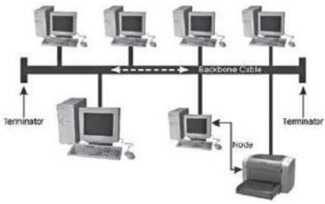

Es el conjunto de instrumentos empleados para manejar información por medio de la computadora como el procesador de texto, la base de datos, graficadores, correo electrónico, hoja de cálculo, buscadores programas de diseñadores redes de telecomunicaciones. Etc
son el conjunto de recursos , herreamientas , equipos , programas informaticos , aplicaciones , redes y medios ;que permiten la complicacion , procesamiento , almacenamiento , trasmision , etc
| ventajas de las Tic | desventajas de las Tic | |
|---|---|---|
| en la educacion |
acceso a diversas fuentes de informacion
comunicacion en tiempo real mayor interraccion desarollo de nuevas habilidades fuera del curriculo oficial aprendizaje personalizado |
riesgo de desigualdad y exclusion .
pueden ser una fuente de distraccion . acceso a informacion de baja calidad disminuyen las habilidades manuales |
| en la sociedad |
democracia del acceso a la informacion
optimizacion de tramites burocraticos acceso a productos y servicios sin limites geograficos acceso a nuevas tecnologias a precios accesibles |
peligro de exposicion de datos personales
acceso a informacion falsa exclusion y desigualdad |
| en las empresas |
eficiente en la toma de decisiones
nuevas modalidades de trabajo nuevas oportunidades de crecimiento |
reduccion de puestos de trabajo
riesgo de ciberataques |
| en el hogar |
facilitan la comunicacion
permiten el acceso a la educacion y el trabajo |
menos interracion familiar
contenido inapropiado |
los bebeficios las tic en la gestion empresas te brindaran la oportunidad de asnalizar datos especificos para planificar negocios . tambiennn te ofrecen diveresas herramientas
es un conjunto de computadoras y software que estan conectados por dispositivos que reciben y envian por trasmision guidada , trasmision inalambrica o saelites de comunicacion con el objetivo de compartir recursos como datos , programas y hardware

| Ventajas | Desventajas |
|---|---|
|
compartir software y hardware
Compartir e intercambiar entre los equipos Centralizar programas de gestión (los usuarios pueden acceder al mismo programa para trabajar en el simultáneamente) Realizar copias de seguridad automática Organización efectiva mejora la comunicacion y la disponibilidad de informacion una vez implementadas son economicas y ahorran tiempo comunicacion rapida y eficiente posibilidad de manejo y control a distancia de nuestra computadora mejora la forma de trabajo indivual y en equipo |
carecen de independencia
existen muchos riesgos por lo que se deben de tomar muchas medidas de seguridad• se require personal capazitado para la administración de mantenimiento de las redes El costo para la implementación inicial es alto Costos de operación y manteamiento Si se depende de la conexión y falla , se pueden ver las consecuenicias en tiempo dinero y forma |
Cada computadora conectada a una red se denomina host o terminal.
Los servidores son computadoras que proporcionan información a los terminales de la red. Por ejemplo: servidores de correo electrónico, servidores web o servidores de archivos.
Los clientes son computadoras que envían solicitudes a los servidores para recuperar información, como una página web desde un servidor web o un correo electrónico desde un servidor de correo electrónico.
La infraestructura de red son todos los recursos que hacen posible la conectividad, la gestión, las operaciones comerciales y la comunicación de la red o Internet... La infraestructura de red comprende hardware y software, sistemas y dispositivos, y permite la informática y la comunicación entre usuarios, servicios, aplicaciones y procesos.


los datos se originan con un dispositivo final , fluyen por la red y llegan a un dispositivo final
| Medios | Ventajas | Desventajas |
|---|---|---|
| Cable coaxial |
Permite la trasmision de voz , datos y video de manera simultanea
Tiene un bajo costo y su instalacion es sencilla y rapida Cuenta con una banda ancha con capacidad de 10MB/segundo |
No hay modelacion de frecuenicas
Hace uso de conectores especiales para la conexion fisica Ofrece poca inmunidad frente a los ruidos , aunque puede mejorarse con filtros |
| Cable de par trenzado (UPT,STP,ETP) |
dan muy buenas presentaciones para redes de area localizacion
facilidad de utilizacion e instalacion bajo costo de fabricacion y adquisicion gran capacidad de transmision de datos en redes de area local rapidad conectividad y actulizable |
No son inmunes al ruido
Ancho de banda limitado Distancia limitada y necesidad de repitores Tasas de errores a considerar en altas velocidades |
| Fibra optica |
Ocupa poco espacio
Facil instalacion es liviana presenta una gran resistencia es mas ecologica inmune a interferencia electromagneticas veloz, eficaz y segura |
mas costoso que los medios para la misma distancia
son fragiles requiere de conversores envejece ante la presencia de agua |
| inalambrico |
Accesibilidad
Facil instalacion Mayor cobertura Flexibilidad Movil y portatil Escalabilidad Eficiencia |
seguridad
ancho de banda limitado velocidad son pronpesas a las interferencias alcance |

| RED | DEFINICION | ALCANCE |
|---|---|---|
| red de area local (LAN). | Es una red que se limita a un área relativamente pequeña tal como un cuarto , un solo edificio | 200 M a 1km |
| Red de area amplia (WAN) | Son redes de informática que se extienden sobre una área geográfica muy extensa , país o continentes , utilizando medios como: satélites ,cables interoceánicos y fibra óptica | Miles de kilometros |
| Red de area personal (PAN) | Es una red de ordenadores usada para la comunicación entre los dispositivos de la computadora cerca de una persona | 10 metros |
| Red de area metropolitana (MAN) | Es una red de alta velocidad (banda ancha ) que da cobertura en un área geográfica más extensa , por ejemplo , una red que interconecte los edificios públicos de un municipio dentro de la localidad por medio de fibra óptica | hasta 50 km |
| RED de area global (GAN) | Utilizan la infraestructura de fibra de vidrio de las redes de área amplia (Wide Área Networks ) y las agrupan mediante cables submarinos internacionales o transmisión por satélite | miles de kilometros |
| Red de area de campus (CAN) | Es una red inalámbrica para comunicar varios edificios que se encuentran a más de 1km en el mismo campus o empresa | 1 a 3 km |
| Red de area de almacenamiento (SAN) | Es una red propia para las empresas que trabajan con servidores y no quieren perder rendimiento en el tráfico de usuario , ya que manejan una enorme cantidad de datos | ilimitado |
Todos los nodos de la red se conectan a un solo cable principal, que sirve que todos los dispositivos. este es uno de los tipos de redes más fáciles de configurar, pero al agregar demasiados dispositivos puedes afectar la velocidad de la red a medida que la red troncal se congestiona. este tipo de red a medidita puede afectar la velocidad de la red a medida que la red troncal se congestione. este tipo de red también es increíblemente frágil, ya que una falla en cualquier punto de la red desconecta toda la red

Son red punto en las que cada nodo está conectada a su vecino inmediato en ambos lados, con datos que viajan alrededor del anillo en una dirección hasta que alcanza el nodo correcto . la falla de un solo nodo provoca una interrupción en toda la red. esta forma de red no requiere un servidor para adminístrala

Todos los nodos se conectan a un solo punto central, como un enrutador. el nodo central. el nodo central actúa como un único punto de falla y un posible cuello de botella de tráfico, pero también es uno de los diseños más fáciles de diseñar y expandir

Las topologías de árbol son una evolución del modelo de estrella e involucra múltiples redes estrellares unidas por un bus central. las redes de árbol generalmente se consideran como topología más escalable, ya que es más fácil expandirse mediante la adición de red de estrellas adicionales

Es cuando hay más de una conexión entre nodos. Esta puede ser una topologia de "malla completa", en la que cada nodo está vinculado a cada otro nodo, o una malla parcial, en la que solo algunos nodos utilizan conexiones múltiples. Esta forma de red es compleja de configurar y administrar, pero incluye un alto nivel de redundancia contra fallas de red.

Internet es el conjunto descentralización de redes de comunicación interconectados que utiliza la familia de protocolos TCP/IP. Lo cual garantiza que las redes físicas y heterogenias que la compone constituyen una rede lógica única de alcance mundial
Una página Web, página electrónica o página digital es un documento digital de carácter multimediático (capaz de incluir audio, video, texto y sus combinaciones), adaptado a los estándares de la World Wide Web (WWW) y a la que se puede acceder a través de un navegador Web y una conexión activa a Internet Las páginas Web se encuentran almacenadas en servidores a los que es posible acceder velozmente gracias a un sistema de protocolos de comunicación (HTTO).Las páginas Web se encuentran programadas en un formato HTML o XHTML, y se caracterizan por su relación entre unas y otras través de hipervínculos.Las páginas Web cumplen con la tarea de brindar información de cualquier índole y en cualquier estilo o grado de formalidad. Algunos permiten distintos grados de interacción entre usuarios o con alguna institución, como son las páginas de foros, servicios de citas o redes sociales, las páginas de compra y venta de bienes, las páginas de consulta o de contacto con empresas, instituciones gubernamentales o con ONG, e incluso de páginas de soporte técnico especializado.
| tipos de paginas | estatica | dinamica |
|---|---|---|
| caracteristicas |
SE PROGRAMAN EN LENGUAJE HTML
NO PERMITE LA INTERACCION CON EL USUARIO SON INFORMATIVAS,DOCUMENTALES Y NO INTERACTIVAS |
SE PROMGRAMAN EN LENGUAJE PHP
PERMITE LA INTERACCION CON EL USUARIO OFRECE UNA RESPUESTA A LOS REQUERIMIENTOS DEL USUARIO |
el comercio electronico o ecommerce es el comercio de bienes y servicos en internet . internet permite individuos y empresas comprar y vender una cantidad cada vez mayor de bienes fisicos , bienes digitales y servicios de forma electronica . el comercio electronico conecta vendedores con clientes y permite intercambios a traves de internet . puede funcionar de diferentes permite intercambios a través de Internet. Puede funcionar de muchas maneras y adoptar varias formas.
el comercio aparece desde que comienzan las relaciones humanas